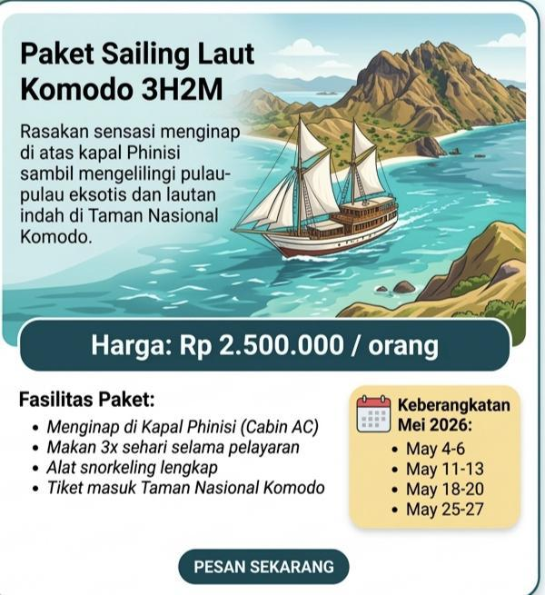
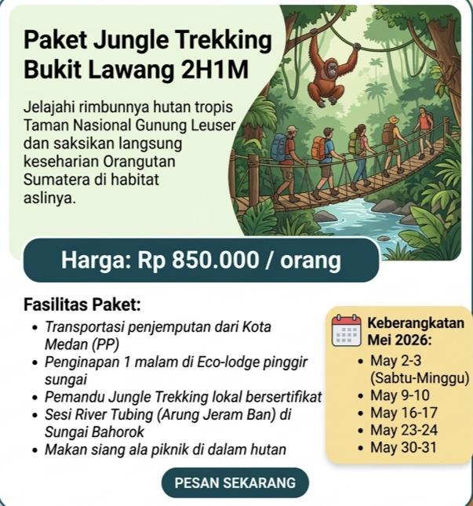

JELAJAH DUNIA BERSAMA JEFFRI ANDREAN
Daftar Paket Wisata Pilihan
Paket Sailing Laut Komodo 3H2M

Rasakan sensasi menginap di atas kapal Phinisi sambil mengelilingi pulau-pulau eksotis dan lautan indah di Taman Nasional Komodo.
Harga: Rp 2.500.000 / orang
Fasilitas Paket:
- Menginap di Kapal Phinisi (Cabin AC)
- Makan 3x sehari selama pelayaran
- Alat snorkeling lengkap
- Tiket masuk Taman Nasional Komodo
Paket Jungle Trekking Bukit Lawang 2H1M

Jelajahi rimbunnya hutan tropis Taman Nasional Gunung Leuser dan saksikan langsung keseharian Orangutan Sumatera di habitat aslinya.
Harga: Rp 850.000 / orang
Fasilitas Paket:
- Transportasi penjemputan dari Kota Medan (PP)
- Penginapan 1 malam di Eco-lodge pinggir sungai
- Pemandu Jungle Trekking lokal bersertifikat
- Sesi River Tubing (Arung Jeram Ban) di Sungai Bahorok
- Makan siang ala piknik di dalam hutan